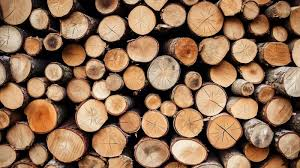
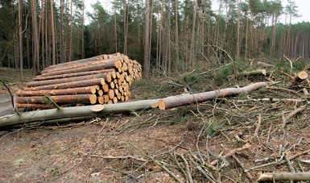
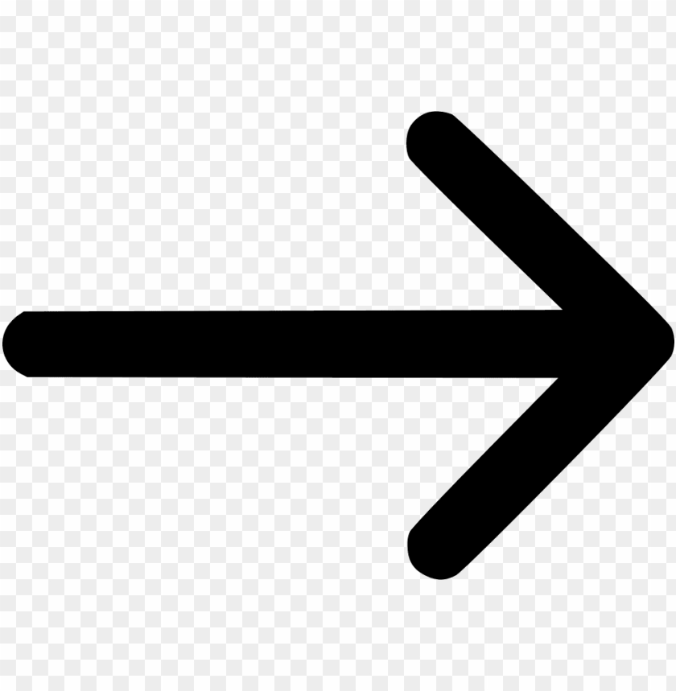
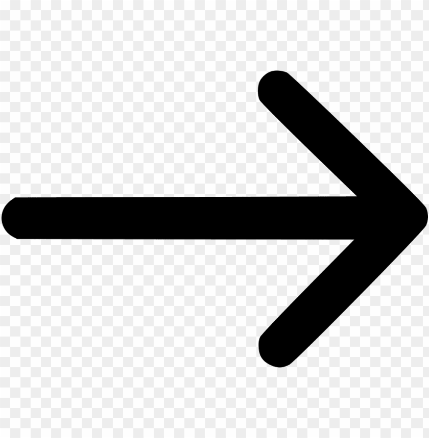

TALA ILEGAL:PROBLEMAS Y CONSECUENCIAS
La tala ilegal es una práctica que evade regulaciones y contribuye significativamente a la deforestación. Sus consecuencias incluyen:
- Pérdida de ingresos gubernamentales: Evasión de impuestos y regalías.
- Corrupción: Fomento de prácticas corruptas en la administración forestal.

- Conflictos sociales: Desplazamiento de comunidades indígenas y locales.
- Degradación ambiental: Explotación no sostenible de recursos forestales.

 
